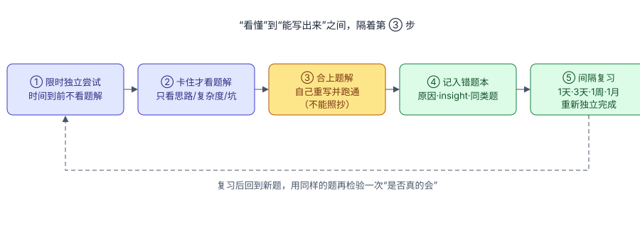
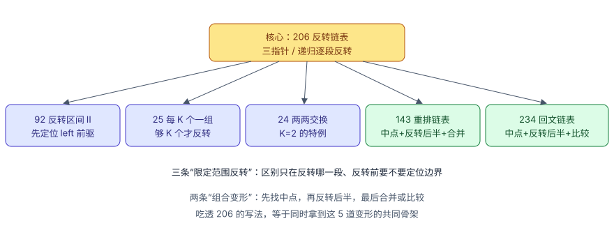

LeetCode 刷题方法论
刷题比的不是数量，而是把每道题吃透的闭环。真正拉开差距的，是“独立尝试、看懂思路、亲手重写、按时复习”这四件事有没有做全。
刷题是一个闭环
很多人的刷题流程是：打开题目 → 想两分钟没思路 → 翻题解 → “原来如此” → 复制 → AC → 下一题。这套流程唯一的产出，是“这题我见过”的印象；换一道变形题就原形毕露。
有效的流程是一个闭环：先限时独立尝试，卡住才看题解；看懂思路后合上题解自己重写；再把错题记下来，按间隔复习，最后用同类题再检验一次。这个循环里的每一环都有不可省略的原因。

闭环里最容易被跳过的是两步：第 ③ 步的“亲手重写”和第 ⑤ 步的“过期后重新做”。跳过它们，刷题就退化成“对答案的熟悉感”——这正是下面这类错觉的来源。
题量不是目标。同一道题，“我做过”和“我能当场从零写对并说清复杂度”是两个完全不同的水平，面试考的是后者。
按专题刷 vs 按频率刷
选“专题”还是“频率”，不是二选一，而是分阶段：早期按专题建立“问题模式 → 结构”的映射，后期按频率冲刺目标企业题库。
专题阶段的标心是：看到一道题，能在几秒内判断它属于哪个专题、该用哪种结构。以下顺序从数组到图逐步上升，后一个专题经常复用前一个专题的知识（对应本课程章节已在旁标注）。
| 专题 | 核心套路 | 对应章节 |
|---|---|---|
| 数组 & 字符串 | 双指针、滑动窗口、前缀和 | 03 |
| 链表 | 反转、快慢指针、dummy 节点 | 04 |
| 栈 & 队列 | 单调栈、单调队列 | 05 / 06 |
| 哈希表 | 空间换时间 | 07 |
| 二叉树 | 递归遍历框架、DFS / BFS 模板 | 08 |
| 递归 & 回溯 | 选择、约束、结束条件 | 15 / 16 |
| 动态规划 | 状态定义 + 状态转移方程 | 17 |
| 贪心 & 二分 | 判断“什么时候能用贪心” | 18 |
| 图 | 建图、BFS / DFS、拓扑排序 | 12 / 13 |
| 进阶结构 | Trie、并查集、堆的高级应用 | 19 / 21 |
每个专题刷多少题没有标准答案——不同基础的人需要的题量不一样，任何“刷够 N 题就稳”的说法都是教学示意，不是可验证的指标。判断是否可以进入下一个专题的依据是：能不能在不看题解的情况下写对，并说清复杂度与边界。
冲刺阶段则反过来：按目标企业近期的面试频率排序（这类信息由 CodeTop 等聚合站提供），优先练近几个月的高频题。不要因为“我已经刷过这道题了”就跳过——高频题值得反复练，直到能在面试压力下从头写对。
怎样看题解
看题解是一项被严重低估的技能。“打开题目 → 想两分钟 → 看题解 → AC”会让人产生“我懂了”的错觉，实际上什么都没留下。
把每次卡住限在一个固定时间内（例如 20 分钟，可自己调整）：这段时间里画图、试不同结构、写伪代码，即使最后没解出来，这段“挣扎”本身的训练价值也高于直接看答案。时限到了再去看题解。
看题解不是看代码，而是看三样东西：
| 看什么 | 为什么要看 | 要问自己的问题 |
|---|---|---|
| 解题思路 | 思路才能应对变形题，代码只能应对原题 | 用了什么结构？为什么选它？核心洞察是什么？ |
| 复杂度分析 | 面试几乎必问，不能只会写不会分析 | 时间/空间复杂度是多少？能优化吗？ |
| 易错点 | 避免面试中重蹈覆辙 | 边界是什么？空输入、单元素、全重复、负数怎么处理？ |
看完这三样之后，合上题解自己写一遍，写完再与题解对照，看哪里不同、谁更好。这一步是闭环里的第 ③ 步，不能省。
直接抄代码不仅学不到东西，还会形成一种“依赖别人写法”的习惯，长期会削弱自己解构问题的能力。
错题本与间隔复习
错题本拉开差距的地方不在“记不记”，而在“记得有没有结构”。纯记题号没用，要记的是：为什么没做出来、这道题的核心洞察、以及可以举一反三的同类题。
| 字段 | 填写内容 | 示例 |
|---|---|---|
| 题目 | 题号 + 题名 | 206. 反转链表 |
| 错误原因 | 为什么没做出来 | 递归的 base case 没想清楚 |
| 关键 insight | 这道题最核心的套路 | 递归反转：让 head.next.next 指回 head |
| 复杂度 | 最优解的时间/空间 | 迭代 O(n)/O(1)；递归 O(n)/O(n) |
| 同类题 | 可以举一反三的题 | 92（反转区间）、25（K 个一组反转） |
| 下次复习 | 按间隔排期的日子 | 间隔复习法排出的具体日期 |
复习间隔用递增间隔：首次 1 天后、其次 3 天后、再 1 周后、最后 1 个月后。每次复习都不看之前的代码，重新做一遍；若到哪一步仍然做不对，说明这一步的间隔太长，回到更短的间隔重来。下面可以推到具体日期（起始日任意，日期按天数偏移计算）：
错题复习排期
把“做题当天”看作第 0 天，按 1 / 3 / 7 / 30 天的间隔推出四个复习日。
口述复杂度
写完代码后几乎一定会被问“时间复杂度是多少”。答不上来，会给人基本功不扎实的印象。把这件事变成习惯：每道题提交前，先用完整的句子说一遍时间、空间和优化空间。
def two_sum(nums, target):
"""两数之和：返回两个下标，找不到返回 [-1, -1]。
时间复杂度 O(n)：只遍历数组一次，哈希表查找是平均 O(1)。
空间复杂度 O(n)：最坏情况下要把 n 个元素放进哈希表。
能优化吗？若数组有序，可改用双指针做到 O(1) 额外空间。
"""
seen = {}
for i, num in enumerate(nums):
complement = target - num
if complement in seen:
return [seen[complement], i]
seen[num] = i
return [-1, -1]注意这里的“O(1) 查找”是平均复杂度：它依赖哈希函数把键均匀散开这个假设，极端情况下最坏可达 O(n)。说“O(n)”时要能补上这句前提，而不是背结果。
三句面试必说：
1. “这道题的时间复杂度是 O(…)，因为……”
2. “空间复杂度是 O(…)，主要的额外空间用在……”
3. “在……条件下，可以优化到 O(…)……”
从一道题到一类题
方法论真正的回报在于“举一反三”。以最经典的206. 反转链表为例：把它的两种写法吃透，等于同时拿到了一整串变形题的骨架。

迭代写法的核心是三指针，每一步“先存后继、再反转自己、最后两个指针一起前进”：
def reverse_list_iterative(head):
prev = None
curr = head
while curr:
nxt = curr.next # 先保存下一个节点
curr.next = prev # 再反转指针
prev = curr # 移动 prev
curr = nxt # 移动 curr
return prev递归写法则反过来，先把子链表反转好，再让后继节点指回自己：
def reverse_list_recursive(head):
if not head or not head.next: # 空或单节点：base case
return head
new_head = reverse_list_recursive(head.next)
head.next.next = head # 让后继节点指回自己
head.next = None # 断开旧指针，避免成环
return new_head迭代额外空间 O(1)，递归额外空间 O(n)——这是调用栈的深度，链表很长时有栈溢出风险。两种写法都要会，而且都要能当场写对。掌握它们后，下面这些题只是在“反转哪一段”上做文章：
| 题号 | 与反转链表的关系 | 额外技巧 |
|---|---|---|
| 92 反转链表 II | 反转区间 [left, right] | 先找到 left 的前驱，记住区间前后的边界 |
| 25 K 个一组翻转 | 按组做区间反转 | 先判断剩余是否够 K 个，再反转 |
| 24 两两交换 | K=2 的特例 | 递归写法很简洁 |
| 143 重排链表 | 反转后半 + 合并 | 快慢指针找中点 → 反转后半 → 交替合并 |
| 234 回文链表 | 反转后半 + 比较 | 快慢指针找中点 → 反转后半 → 逐位比较 |
按难度分层
不同难度有不同的训练目的，刷题目标也要分层。下面的题数仅供教学示意（不同基础的人差异很大，不是硬指标），真正值得注意的是比例：中等题才是绝对主体，面试中遇到困难题的概率远低于中等题。
| 难度 | 训练目的 | 典型代表 |
|---|---|---|
| 简单 | 建立信心、熟悉基础 API 与输入输出 | 两数之和、反转链表 |
| 中等 | 核心训练，覆盖大多数面试题 | 三数之和、LRU 缓存 |
| 困难 | 挑战思路极限，为高阶 offer 做准备 | 合并 K 个升序链表、接雨水 |
不要把大量时间花在困难题上。一道中等题没吃透就去碰困难题，往往只是把“不会”换了个难度而已；反过来，中等题基本盘稳了，困难题常常也能看出可以拆成哪个已知结构。
每道题做完后，问自己三个问题：
1. 为什么选这个数据结构？哈希、栈还是队列？有没有其他选择？
2. 有没有更优解？时间能降吗？空间呢？
3. 边界条件是什么？空输入？单元素？全重复？负数？
把这三个问题变成肌肉记忆，解题质量会上一个台阶。
带走三个判断准则
- “看懂”不等于“会写”：必须合上题解亲手重写并跑通，否则只记住了答案。
- 看题解看的是三样东西——思路、复杂度、易错点，而不是一段可以复制的代码。
- 把题当成一类题的样本：吃透一个核心不变量，就能覆盖一串变形题。
继续学习与校验资料
- LeetCode 206. 反转链表 — 本章“解法家族”的核心题
- LeetCode 1. 两数之和 — 口述复杂度分析的例子
- 第 24 章：大厂面试高频题精讲；第 4 章：链表；第 2 章：复杂度分析
- 运行参考：
examples/study_patterns.py；测试：tests/test_study_patterns.py